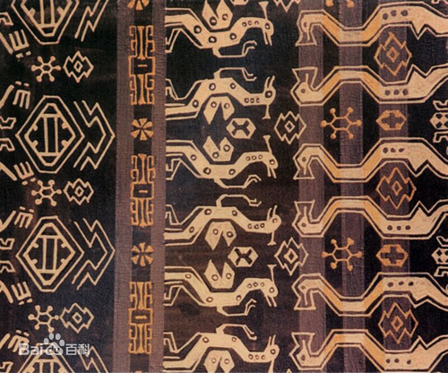
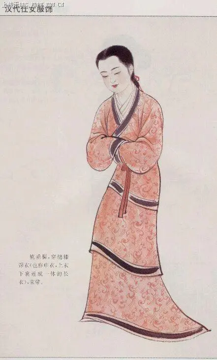
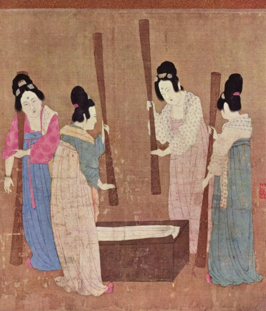
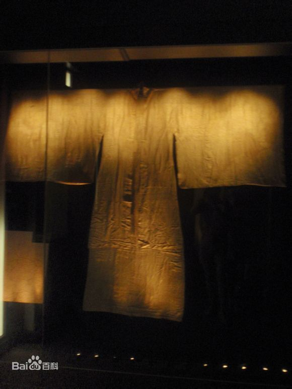
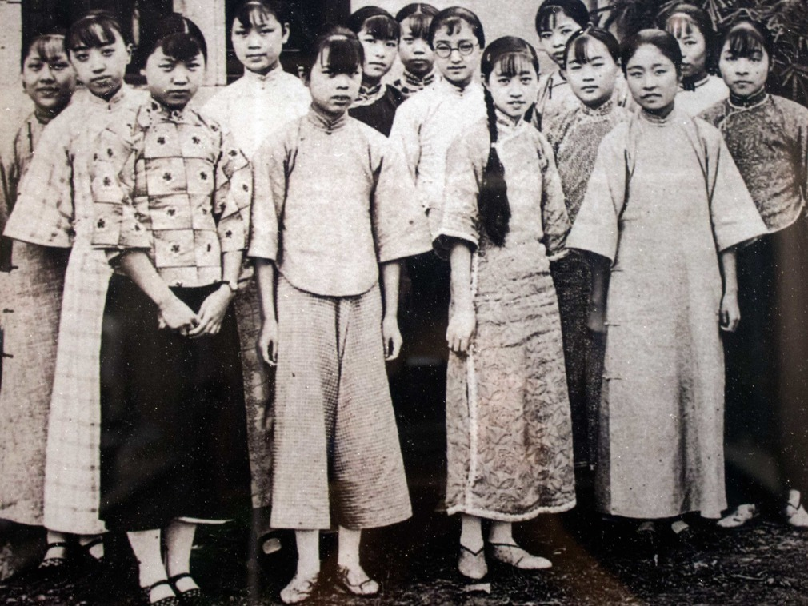

简介
中国不同的民族每个时代都有不同的服饰。从汉族服饰看，中国汉服有以先秦两汉为代表的周制服饰，以唐为代表的唐制服饰 ，以及以明为代表的明制服饰等之别。它们各具特色，充分揭示出不同朝代，不同环境下，汉族人民对生活，对美的种种追求向往。
传统服装有两种基本形制，即上衣下裳制和衣裳连属制。上衣下裳制，相传起于传说中的黄帝时代，《易·系辞下》载：“黄帝、尧、舜垂衣裳而天下治，盖取诸乾坤。”这一传说可以在甘肃出土的彩陶文化的陶绘中，得到印证。上衣下裳的服制，据《释名·释衣服》载：“凡服上曰衣。衣，依也，人所依以避寒暑也。下曰裳。裳，障也，所以自障蔽也。”上衣的形状多为交领右衽，下裳类似围裙的形状，腰系带，下系芾。这种服制对后世影响很大。
衣裳连属制，古称深衣，始创于周代。《礼记·深衣》注称：“名曰深衣者，谓连衣裳而纯之以采也。”深衣同当代的连衣裙结构类似，上衣下裳在腰处缝合为一体，领、袖、裾用其它面料或刺绣缘边。深衣这一形制，影响于后世服饰,汉代命妇以它为礼服，古代的袍衫也都采用这种衣裳连属的形式,甚至现今的连衣裙也是深衣制的沿革。
各时代服饰
商周时代服饰
商周时代的服饰，主要是上身穿「衣」，衣领开向右边；下身穿「裳」，裳就是裙；在腰部束着一条宽边的腰带，肚围前再加一条像裙一样的「韍」，用来遮蔽膝盖，所以又叫做「蔽膝」。
商周时期的装饰纹样造型，强调夸张和变形，结构以几何框架为依据作中轴对称，将图案严紧地适合在几何框架之内，特别夸张动物的头、角、眼、鼻、口、爪等部位，以直线为主，弧线为辅的轮廓线表现出一种整体划一，严峻狞厉的美学风貌，象征着奴隶主阶级政权的威严和神秘，这是奴隶社会特定的历史条件下形成的时代风格。
冕服：礼服中最专贵的一种，冕服均在祭典中穿着，是主要的祭服。其服式主要由冠、衣、裳、蔽膝等要件所组成。冕服的主体是玄衣、衣裳上面绘绣有章纹，而在最隆重的典礼时，穿九章纹冕服。衣裳之下，衬以白纱中单，即白色的衬衣，古代衬衣通常是白色。下身前有蔽膝，天子的蔽膝为朱色，诸侯为黄朱色。鞋是双底的，以皮革和木做底，鞋底较高，周代天子，在隆重典礼时穿赤色的。
弁服：其隆重性仅次于冕服，衣裳的形式与冕服相似，最大不同是不加章。弁服可分为爵弁，韦弁、冠弁等几种，它们主要的区别在于所戴的冠和衣裳的颜色。
玄端：为天子的常服，诸侯及其臣的朝服。
深衣：古代凡是服礼都是上衣下裳不相连，惟此种衣裳是上下相连，分开裁但是上下缝合，因为「被体深邃」，所以称为「深衣」。
禕衣：为王后从王祭先王的俸祭服。
褕翟：为王后从王祭先公和侯伯夫人助君祭服。是青色衣，画褕翟纹十二章纹，褕翟羽色亦为五采。
阙翟：为王后助天子祭群小神和子男夫人从君祭宗庙祭服。是赤色衣，刻赤色缯的翟纹。
鞠衣：为王后率领命妇祭蚕神告桑的礼服，亦为诸侯之妻从夫助君祭宗庙的祭服。
展衣：又称襢衣为王后礼见王及宴宾客的礼服，亦是卿大夫之妻从夫助君祭宗庙的祭服。
禄衣：为王后燕居时的常服，亦为士之妻从夫助祭的祭服。
纯衣：为贵族之女的嫁衣。
殷商服饰
商代服饰不论尊卑和男女都是采用上下两段的形制，上着衣，下穿裳，后世称服装为“衣裳”，便是源自于此。其服饰的腰身和衣袖基本上设计为紧窄的样式，长度齐膝，便于活动。古代华夏族上衣下裳，束发右衽的装束特点，就是在商代形成的。 [2] 黄能馥《中国服装史》：“河南安阳小屯、侯家庄商墓许多人头骨顶部有骨笄，髻有单个和双个的，用笄数量也不一样。小屯商墓主人用玉笄，殉葬者用骨笄。”商代贵族、平民都是束发的。
虽然商代服饰的基本形制趋同，但实际上商朝的服饰还是具有相当严格的等级制度的，比较高级的染织品、刺绣品及装饰品都由奴隶主阶级享用，而底层的民众只能穿麻布以及与麻布同类的葛布制成的编织物。据研究表明，商代高级权贵的服饰通常是上身穿短衣，交领右衽，衣长及臀，袖长及腕，袖口窄小，下身穿带褶短裙，腰间束有宽带，裹腿；脚上穿翘尖鞋。贵族妇女则上身穿长及足踝的大衣，交领，长袖，腰间束宽带和蔽膝。蔽膝围于衣服前面的大巾，用以蔽护膝盖，蔽膝呈上窄下宽状。脚上穿履，头戴圆箍形冠卷。
除形制以外，商朝服饰严格的等级制度还体现在颜色的使用上。贵族的礼服，上衣多采用青、赤、黄等纯正之色，下裳多用间色，如缁、赭、绿等经过数次浸染的颜色，并且衣领，衣袖处还有镶边，日常家居则常穿缟衣，绿衣和缁衣。平民百姓的衣服就没有这么丰富多彩了。
提及服饰文化，不光有服还有饰，服和饰通常是搭配出现的。从殷代的出土玉石人形象可见殷代男女贵族身上还有佩玉的习惯，统治者甚至制定了一整套的玉佩制度，用以区别阶级和等级。商人玉佩的形式，一般是把玉雕琢成各种小动物形象，最常见的是一种玉鱼。
殷商时期，服饰能够出现这样的等级差别，与当时相对于原始经济而言的繁荣和技术进步密切相连。正是由于当时的经济有了一定的发展，才有可能为社会提供众多的服饰资料，统治阶级才能择其优者自用，而弃其劣者予贫民；才能够在服饰材料的质地、颜色、图案上分等论级，这就给后代的等级制度奠定了一定的基础，并在后世正式确立了章服制度。“章服制度”始自我国奴隶社会，封建社会时期发展完备，章服制度对帝王和百官公卿所穿的衣服，底色和花纹等设置了相关的规定，作为区别身份等级的标志。
春秋战国服饰
春秋战国的衣服，是直筒式的长衫，把衣、裳连在一起包住身子，这种衣服叫「深衣」。还有一种「单衣」，是没有里子的宽大衣服。他们头上还戴「帻」；帻是用来包住头发的头巾，不让它们披散下来。
春秋战国时期的服饰纹样是从商周奴隶社会的装饰纹样传统基础上演化而来。
春秋服饰
战国时期服饰纹样的题材，具有一定的象征含义，当时最为流行的龙凤既寓意宫廷昌隆，又象征婚姻美满。鹤与鹿都象征长寿。翟鸟是后妃身份的标志，鸱鸺（猫头鹰）象征胜利之神，以上题材多用于刺绣中。丝织纹样因受提花工艺的限制，战国时多限于菱形纹、方棋纹、复合菱形纹及在这类几何纹内填充人物、车马、动物等的变体纹样。
袍的款式有三种类型。第一型：后领下凹，前领为三角形交领。两袖下斜向外收杀，袖筒最宽处在腋下，小袖口。此型尺寸较小，比较实用。 第二型：两袖平直，宽袖口，短袖筒。后领直起，前领为交领（三角形）。衣身较宽松，为罩于表面的袍服。第三型：长袖，袖下部呈弧状（袖下面的弧线称为“胡”，据《后汉书·舆服志》说它是仿效牛的颈项下有垂胡之形而设计的）。衣身宽松，有华贵的风度。此种款式至西汉仍继续流行。
秦代服饰
秦代服饰主要是沿袭了战国的形制，样式比较简单。公元前221年，秦始皇吞并六国，建立了我国历史上第一个中央集权的国家后，相继建立了各项制度，包括衣冠服制。秦始皇崇信“五德终始”说，自认以土德得天下，崇尚黑色。秦汉时代，中国服色是一个重要阶段，也就是将阴阳五行思想渗进服色思想中，秦朝国祚甚短，因此除了秦始皇规定服色外，一般的服色应是沿袭战国时代的习惯。
秦始皇本人废周代六冕，常服通天冠，郊祀时只着“袀玄”。
男服服饰秦始皇规定的大礼服是上衣下裳同为黑色祭服并规定衣色以黑为最上，女服服饰秦始皇喜欢宫中的嫔妃穿着漂亮的及以华丽为上。由于他减去礼学，对于嫔妃的服色，是以迎合他个人喜好为主。不过基本上仍受五行思想支配。
当时的男子多以袍服为贵，袍是继深衣之后出现的一种长衣，始见于战国.袍服的样式以大袖收口为多，一般都有花边。三品以上的官员穿绿袍，一般庶人穿白袍。官员头戴冠，腰佩刀，手执笏板（上朝用的记事工具），耳簪白笔（上朝用于记事）。百姓、劳动者或束发髻，或戴小帽、巾子，身穿交领、窄袖长衫。
博士、儒生是秦代十分重要的阶层，他们的服饰表现出独特的一面，既拘泥于古代，又有所变革。他们穿着的衣服和当时流行的服饰虽然款式有所不同，但质地却是一样的。博士、儒生们衣着很朴素，通常是冬天穿縕袍，夏天穿褐衣，即便是居于朝中的，衣着也是一般，基本都够不上华丽。
农民的服装主要是由粗麻、葛等制作的褐衣、縕袍、衫、襦等构成。
奴隶和刑徒最明显的标志是红色，是史书上所说的“赭衣徒”。这些人都不得戴冠饰，只允许戴粗麻制成的红色毡巾。
不同于其他朝代的是，秦朝服饰的亮点是当时的军服。有关这一点，通过秦始皇的兵马俑可窥一斑。随葬俑大概出现在春秋战国时期。秦始皇完成统一中国的大业后，为了标榜自己的战功，生前就开始筹划制造大规模的随葬兵马俑。1974年开始发掘的秦始皇兵马俑，位于骊山北麓。陶俑或神态肃穆，巍然而立，或凝神沉思，坚毅威武。他们的战袍都是用布帛、皮革、金属等缝制到一起的，鞋子都是针脚细密的布底鞋。
秦朝的高级将军，身穿双重长襦，下着长裤，外披彩色的铠甲。这些铠甲为临阵指挥的将官所穿，胸前、背后都没有甲片，而是绘有几何形彩色花纹，好像是以一种质地坚硬的织锦制成，但也有可能是用皮革做成后绘上图案的。中级军官有两种服装，一种是长襦，外面披着彩色花边的前胸甲，胫上裹着护腿；另一种是高领的褶服，外披带彩色花边的齐边甲，胫绕绑护腿。下级军吏则身穿长襦，外披铠甲，腿札行滕或护腿，也有少数下级军吏不穿铠甲，属于轻装。
汉代服饰
汉朝的衣服，主要的有袍、襜褕﹝直身的单衣﹞、襦﹝短衣﹞、裙。汉代因为织绣工业很发达，所以有钱人家就可以穿绫罗绸缎漂亮的衣服。一般人家穿的是短衣长裤，贫穷人家穿的是短褐﹝粗布做的短衣﹞。汉朝的妇女穿着有衣裙两件式，也有长袍，裙子的样式也多了，最有名的是「留仙裙」。
汉朝服饰
男子服饰
礼服：汉朝的祭祀礼服，承袭了秦代的废除「六冕」，以一种冕服为祭天地明堂之礼服的办法。
冕冠服：为最尊贵的祭祀礼服，是天子及三公诸侯、卿大夫祭天地明堂之时穿着。
长冠服：为夫子和执事百官，用在祭宗庙及各种小祀，如五岳、四渎、山川、社稷等典礼穿者。
委貌冠服：相当于周代的冠弁服。为公卿诸侯大夫行大射礼于辟雍的时候穿着。
皮弁冠服：此种冠服为大射礼时，执事者穿着，衣裳为缁麻衣，皂领袖、素裳。
朝服：自秦开始以袍作为朝服，汉代从皇帝至贱更小吏亦以袍作为朝服，也是主要常服。亦即是深衣制的袍服，不过因不同身份的人戴的冠不同而有不同之名称。汉代的朝服，服色是随着五时色，即春青、夏朱、季夏黄、秋白、冬黑。朝服均是衬以告缘领袖的中衣。
女子服饰
庙服：相当于周代的禕衣，是女子礼服中，地位最尊贵的一种。太皇太后、皇太后之入庙服，皇后之谒庙服，其服色是皂下。
蚕服：相当于周代约鞠衣。每年三月，皇后帅领公卿诸侯夫人亲蚕礼时穿着。
朝服：自二千石夫人以上至皇后，皆以蚕衣为朝服。
魏晋南北朝服饰
魏晋南北朝是我国古代服装史的大变动时期。
男服服饰
礼服：除了北周以外，最大礼服祭服，仍只有一种，与汉代大致相同，惟衣裳主色稍有差异。
平冕服：各级的形式、服色大致相同，唯衣裳上的章纹，天子用十二章，三公诸侯用山龙等九章，九卿以下用华虫等七章，天子用刺绣文，公卿用织成文。
北周冕服：北周武帝汉化政策相成功，大力推行中国古代的周礼之制，因此北周的服色制度多根据周礼而定。
委貌冠服：为公卿行卿射礼之礼服。衣黑而裳素，中衣以皂缘为领袖。
朝服：同于汉代，天子与百官之朝服以所戴之冠来区别，亦都有五色朝服，不过汉代平时常朝以皂朝服、绛服为多，而魏晋南北朝则以绛朝服为主。
冠服：魏晋南北朝，各王朝均以此服为天子的朝服，也是次等的礼服。着绛纱袍，皂缘中衣，黑鞋。
远游冠服：为皇太子及诸王所服，着朱衣，绛纱袍，皂缘白纱中衣，白曲领。
百官冠服：以绛纱为主。但陈制较复杂，百官位高者以朱衣为朝服，位卑者，则以皂衣为朝服，皂白纱缘中单。
品色衣：天台近侍及宿卫之官，皆着五色衣，以锦绮馈绣，名曰品色衣。
常衣：主要是裤褶服，用途非常广，可以做朝服、军服、便服、从贵族到庶民均用到它。
女服服饰
唐朝服饰
皇后谒庙服：是女性官服中，最隆重的礼服，也是皇后的嫁服。
入庙佐祭服：为妃、嫔、命妇之祭服。在晋及南朝宋、陈均为皂上皂下。
亲蚕服：为皇后行亲蚕礼之礼服，均为青上缥下。
助蚕服：为妃、嫔、命妇助皇后行亲蚕礼之礼服，在晋及南朝陈为缥上缥下。南朝宋为青上青下。
朝服：以上三朝均以为女性之朝服。
比周礼服：女性官服与男性官服同样，非常复杂，用色亦多，与前述朝代大不相同。
隋唐五代
隋唐时，一般人是穿白色圆领的长衫，低下阶层穿的是用麻、毛织成的「粗褐」。隋代女子穿窄合身的圆领或交领短衣，高腰拖地的长裙，腰上还系着两条飘带。唐代的女装主要是衫、裙和帔；帔就是披在肩上的长围巾。还有特别的短袖半臂衫，是套穿在长衫外面。
男服服饰
冕服：祭服，最隆典礼礼服。自天子至百官均服之。
朝服：为次于冕服的第二等礼服。
通天冠服：天子之最隆重朝服。
远游冠服：为皇太子及亲王的最隆重之朝服。
具服：亦称朝服。
公服：为次于冕服、朝服的第三等礼服。
弁服：天子在朔日受朝时服之，皇太子在朔望视事时服之。
公服：皇太子在五月常朝、元日冬至受朝时服之。
平巾帻服：戎装的公服。
乌纱帽服：为天子及皇太子视朝、听讼和宴见宾客的服装，以乌纱做帽。
黑介帻服：没有公职的士人，在朝见受诏时穿着。
常服：为使用最多的一种服装。
黄袍：天子开始常穿黄色袍。
品服：以不同服色来分别品官之职位高低的传统。
宋代服饰
女服服饰
大礼服：
褘衣：最隆重的大礼服。
褕翟：皇太子妃最降重的大礼服。
常礼服：
青衣：皇后礼见皇帝时穿着的。
朱衣：皇后宴见宾客时穿着的。
钿钗礼衣花钗礼衣：归嫁礼服。
宋代服饰
宋朝的男装大体上沿袭唐代样式，一般百姓多穿交领或圆领的长袍，做事的时候就把衣服往上塞在腰带上，衣服是黑白两种颜色。当时退休的官员、士大夫多穿一种叫做「直掇」的对襟长衫，袖子大大的，袖口、领口、衫角都镶有黑边，头上再戴一顶方桶形的帽子，叫做「东坡巾」。
宋代的女装是上身穿窄袖短衣，下身穿长裙，通常在上衣外面再穿一件对襟的长袖小褙子，很像现代的背心，褙子的领口和前襟，都绣上漂亮的花边。
明代服饰
朱元璋统一天下，明代开始整体上大致恢复唐宋制的汉人衣冠。
明代的男装，大人多穿青布直身的宽大长衣，头上戴四方平定巾，一般平民穿短衣，裹头巾。 这个时候出现了一种六瓣、八瓣布片缝合的小帽，看起来很像剖成半边的西瓜。本来是仆役所戴的，但是因为戴起来很方便，所以就普遍流行起来。这就是清代「瓜皮小帽」的前身。
明代的贵妇多是穿红色大袖的袍子，一般妇女只能穿桃红、紫绿及一些浅淡的颜色。平日常穿的是短衫长裙，腰上系着绸带，裙子宽大，样式很多，像百褶裙、凤尾裙、月华裙等。
中华民国服饰
中华民国初期女性服饰
民国初年的女子，生活起了变化，居住在大都市的摩登女子，受这种外来思潮的影响，纷纷走出闺房，奔向社会，投身于电影业、商业、手工艺业等。由于职业的要求，这些女性的改装换容就成了必然之事。在民国元年，政府规定了男女礼服的形制：男子有大礼服和常礼服。大礼服分昼礼服和晚礼服两种，均采用黑色衣裤和领结。常礼服有西式和中式两种，中式即长袍马褂。女子礼服是身长齐膝、有领、对襟式，裙的前后有镜面，两则做裥，两端有带结的式样。都市女子结婚采用披白纱，身着丝织礼服，手持白色花，举行“文明”结婚，农家女子仍然以红袄珠冠，乘坐花轿，保持着旧式风俗。
在国际外交场合，很多国家领导人如毛泽东、周恩来、邓小平等都常穿着根据中山装改良而来的服装。作为中式礼服的中山装，因由孙中山设计并率先穿着而得名。
中山装立翻领（最早是立领），对襟，前襟五粒扣，四个贴袋，袖口三粒扣。后片不破缝。这些形制其实是有讲究的，根据《易经》周代礼仪等内容寓以意义。